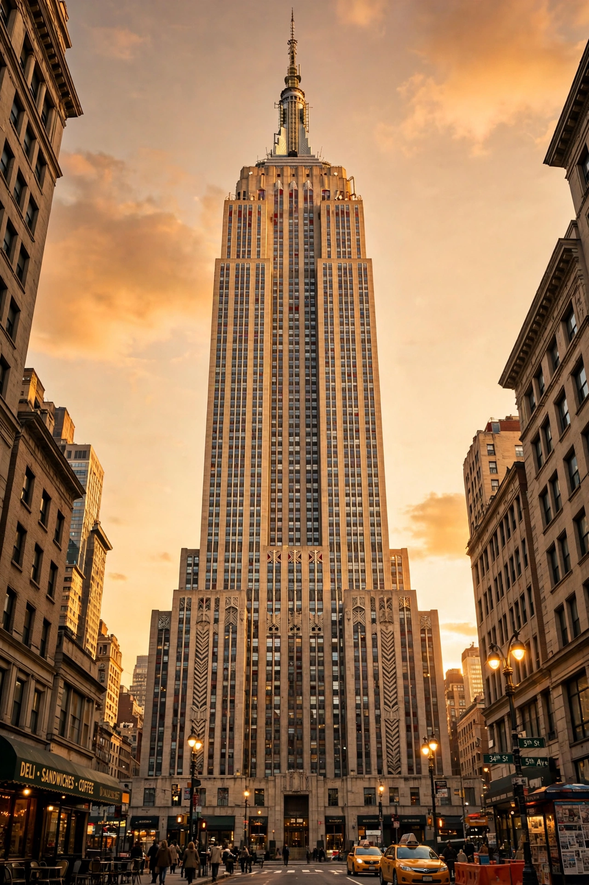

Empire State Building

| Location | 350 Fifth Avenue, New York City |
|---|---|
| Architect | Shreve, Lamb & Harmon |
| Style | Art Deco |
| Height | 443.2 m (1,454 ft) to tip; 381 m to roof |
| Floors | 102 |
| Construction | 1930–1931 |
| Opened | May 1, 1931 |
The Empire State Building is a 102-story Art Deco skyscraper in Midtown Manhattan, New York City. Designed by Shreve, Lamb & Harmon and built from 1930 to 1931, it stands 381 metres (1,250 ft) to its roof and 443.2 metres (1,454 ft) including its antenna. It was the world's tallest building for nearly 40 years, until the World Trade Center's North Tower was topped out in 1970.
Construction
The building rose on the site of the original Waldorf-Astoria hotel during the Great Depression. Construction proceeded at a remarkable pace — at times more than four and a half storeys per week — employing some 3,400 workers, many of them immigrants and Mohawk ironworkers renowned for their work at height. The building was officially opened on May 1, 1931, when President Herbert Hoover turned on its lights remotely from Washington, D.C.
Design
The limestone-clad tower rises in setback tiers above a five-storey base, topped by a 16-storey tower and the distinctive mooring mast, originally intended for docking airships — a plan abandoned after a few attempts showed it was impractical. The lobby is decorated with aluminium reliefs and murals celebrating industry and craftsmanship.
Incidents and culture
In July 1945, a B-25 bomber lost in fog crashed into the 79th floor, killing 14 people. The building has appeared in dozens of films, most famously King Kong (1933), in which the giant ape climbs it in the finale, and Sleepless in Seattle (1993). Its observation decks on the 86th and 102nd floors draw several million visitors a year.
The building's floodlights change colour to mark holidays and events, and the annual Empire State Building Run-Up stair race has been held since 1978.